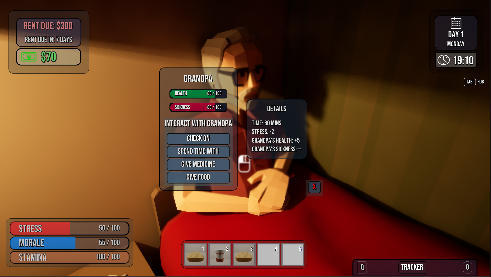
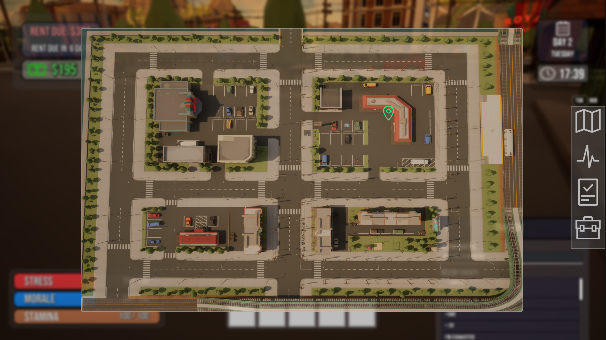
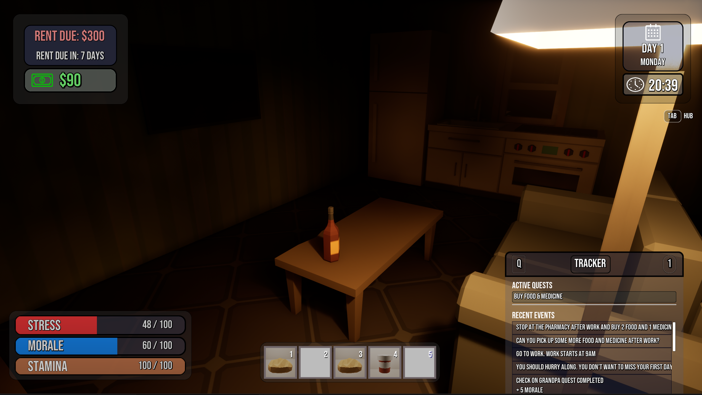
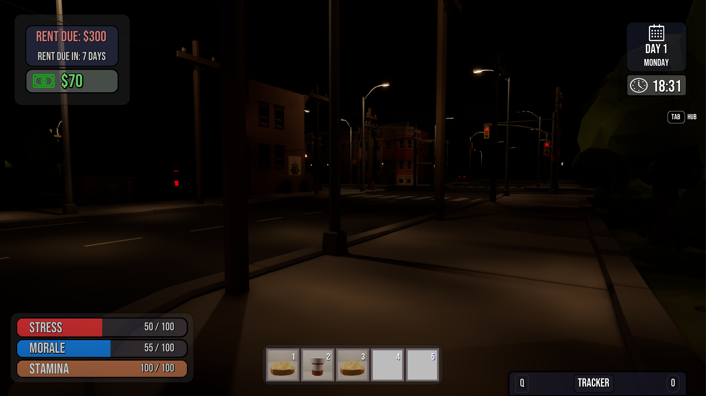

Start the Workday
Review priorities, available actions, and what the day is asking from the player.
Games
Independent game projects built around work, pressure, consequence, survival, and the choices people make inside systems larger than themselves.
Back to Studio Projects


A satirical office-life game about surviving the workweek, managing energy and stress, completing enough work to stay employed, and climbing a deeply questionable corporate ladder.
The core loop moves from planning the workday through action cards and into an end-of-day review.
Review priorities, available actions, and what the day is asking from the player.

Spend limited time on productive work, visibility, favors, meetings, and other office pressures.

See how choices affected performance, stress, energy, reputation, and progress.
Housing and transportation decisions connect the office loop to the character's money, reputation, and daily starting conditions.

Housing choices affect expenses and the conditions the player begins each day with.

Transportation affects money, visibility, reputation, and the daily routine.
A long-term narrative survival game about work, family, resistance, limited time, and the consequences of trying to live inside an increasingly hostile system.

State of Dissent combines exploration, conversation, daily survival, and personal obligation. The player moves through a city where ordinary routines, family relationships, and growing political pressure all compete for limited time and attention.
Long-term development
Conversations place family, obligation, and survival beside the larger conflict unfolding around the player.

The hub map connects work, home, public spaces, and the places where the player chooses to spend limited time.
 Residential district
Residential district

Home and inventory systems
Nighttime atmosphere